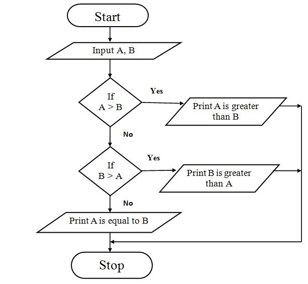

STAM 102 :: Lecture 14 :: Principles of Programming: Flow charts, illustrations through examples

Principles of Programming
- The program or set of programs in a computer that helps in processing the information is called SOFTWARE.
- Software is a detailed writing of stepwise instructions for the computer to carry out the particular task efficiently and properly.
- The art of writing software is called programming.
- Software is an essential part of a computer. Without the software the computer will neither accept information nor give the desired result.
Algorithm
- A step-by-step procedure to solve the given problem is known as Algorithm.
- The essential properties of Algorithm are:
- It should be simple
- It should be clear with no ambiguity
- It should lead to a unique solution of the problem.
- It should involve a finite number of steps to arrive at a solution.
- It should have the capability to handle some-unexpected situations.
- For example if a student wants to purchase a pen, he has to follow the following steps.
Step |
Action |
1. |
He has to get money from parents. |
2. |
Come out of the House to cross the road |
3. |
Check the vehicle movement for safe crossing. |
4. |
When it is safe to cross the road, he crosses the road. |
5. |
He gets into the shop. |
6. |
Asks for a pen. |
7. |
Selects a pen from the lot shown to him by the shopkeeper. |
8. |
Pays money to the shopkeeper. |
- These numbered steps are known as Algorithm.
Flow Chart
- The graphical or visual representation of algorithm is called as flow chart.
- The flow charts are easier to understand the flow of the solution.
- Flow charts are drawn with the standard symbols accepted worldwide.
- Each standard flow chart symbol represents on action to be performed such as Start or Stop, input operations Read or Write, decision making etc.
Standard Flow Chart Symbols
1. |
Terminal (Start or Stop Symbol) |
|
2. |
Input / Output |
|
3. |
Processing |
|
4. |
Flow Lines: These are arrow mark symbols used to connect two boxes and to indicate the direction of data or processing flow. |
|
5. |
Decision Box: This is a diamond shaped box, which is used to indicate logical checking and gives decision after comparing between two or more objects (Eg. Yes or No; True or False, =, >, <, etc.) |
False True |
6. |
Connector: This is a Circular-shaped symbol used to connect different parts of flowchart. When the flow chart is lengthy, it is split into different pages. Then these connectors are used to connect between these pages at the beginning and at the end of each page. |
|

Illustrations through examples
- Algorithm and flow chart to read the name and print the name.
Algorithm |
Flow Chart |
Step 1 : Start |
- Algorithm and flow chart to add two numbers.
Algorithm |
Flow Chart |
Step 1 : Start |
- Algorithm and a flow chart to calculate area of square.
Algorithm |
Flow Chart |
Step 1 : Start |
- Algorithm and flow chart to find the average of three numbers.
Algorithm |
Flow Chart |
Step1 : Start |
- Algorithm and flow chart to find the largest of two numbers.
Algorithm
Step1: Start
Step 2: Enter two numbers A and B
Step 3: Check if A is greater than B if yes go to Step 4 else go to Step 5
Step 4: Print A is greater than B
Step 5: Check if B is greater than A if yes go to Step 6 else go to Step 7
Step 6: Print B is greater than A
Step 7: Print A is equal to B
Step 8: Stop
Flow Chart

- Algorithm and a flow chart to find the factorial of a number.
Algorithm
Step 1: Start
Step 2: Read N
Step 3: [Initialize all counters] Set FACT= 1, i = 1
Step 4: Compute Fact = Fact * I Increment i
Step 5: Check if i < = N if true repeat step 4 if false go to step 6
Step 6: Print fact
Step 7: Stop
Flow Chart
Advantages of Flowchart
1. Conveys Better meaning
Since a flowchart is a pictorial representation of a program, it is easier for a programmer to understand and explain the logic of the program to other programmers.
2. Analyses the problem effectively
Flow chart helps the programmers to analyze the problem in detail by breaking the flow chart into detailed parts.
3. Effective Coding
It is very easy for the programmers to write the program, because flow chart will give a clear idea of the steps involved.
4. Systematic Debugging
Even after taking the full care in program design, some errors may remain in the program because the programmer might have never thought of a particular case.Using a flow chart can reduce this type of errors. It also enables easy detection of errors.
| Download this lecture as PDF here |